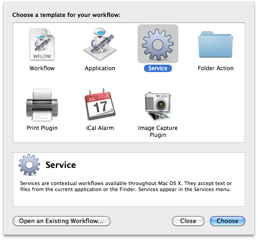
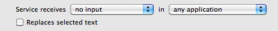
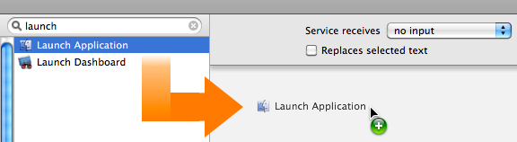
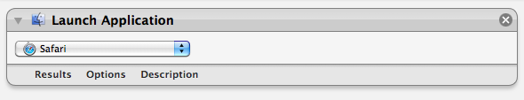
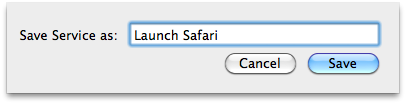
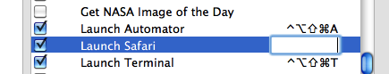

Create Your Own Keyboard Application Launcher
REQUIRES MAC OS X v10.6
Here's an easy-to-create service that will quickly launch a favorite application by simply typing a key combination.
STEP 1 • Launch Automator
New services are created using the Automator application located in the Applications folder on your computer. Double-click the icon of Otto the automation robot to open Automator.
STEP 2 • Choose Services Template
When Automator is launched, it displays a Template Chooser as drop-down sheet connected to the new Automator window. The various template options represent the ways you can deploy the Automator workflow you are creating. Select the Services template and press the Choose button to close the Template Chooser sheet.
{kind=link}

STEP 3 • Set the Input Settings
A gray bar will be displayed across the top of the workflow area of the Automator window. The bar displays the settings that indicate the data type processed by the workflow and in which application context the service will appear. For this example, no data is required for the workflow to process, so select NO INPUT from the first popup menu. SInce you want to be able to access this example service from within any application, choose the ALL APPLICATIONS option from the context popup menu. And finally, leave the checkbox indicating whether any data produced by this service should be replace the selection in the current application, unchecked.

STEP 4 • Add an Action
Now that the input settings have been applied, locate the Launch Application action by entering its name in the search field to the left of the data input bar. It will be displayed in the action list below the search field. Drag the action title to the area after the data settings bar, and release the mouse to add the action.

Once the action view is displayed, select the name of the application you want to launch from the popup menu list of applications installed on your computer. For this example, choose the Safari application.

STEP 5 • Save the Service
Choose Save from Automator's File menu and in the drop-down naming sheet, enter the name for this service: Launch (name of your chosen application)

The service is automatically installed into the Services menu. Close the automator window.
STEP 6 • Assign Keystroke Combination
The final step is to assign a keystroke combination to the newly created service. Open the System Preferences application and navigate to the Keyboard preference pane, and select the Keyboard Shortcuts tab. From the list on the left of the preference pane, select the Services category. A list of the installed services will be displayed to the right. Scroll to the last category titled GENERAL, and locate the LAUNCH SAFARI service you just created. Double-click to the far right of the service name to activate the keystroke input field and then tyhpe the key combination you wish to assign to the service. Close the System Preferences application.

Launching the Application
Once the keystroke combination has been assigned, type the combination from within any application and the application will launch!